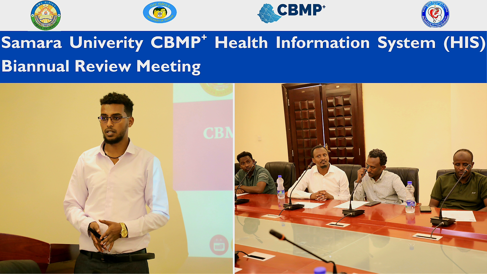

Research & Publications
Featured Publications
Forecasting tuberculosis in Ethiopia using deep learning: progress toward sustainable development goal evidence from global burden of disease
Tadese ZB, Arage, F.G., Tsegaw, T.K. et al. (2025)
BMC Infect Dis 25, 870 (2025) doi: 10.1186/s12879-025-11228-3
View PublicationExploring machine learning algorithms for predicting fertility preferences among reproductive age women in Nigeria
Tadese ZB, Nimani TD, Mare KU, Gubena F, Wali IG and Sani J (2025)
Front. Digit. Health 6:1495382 doi: 10.3389/fdgh.2024.1495382
View PublicationInterpretable prediction of acute respiratory infection disease among under-five children in Ethiopia using ensemble machine learning and Shapley additive explanations (SHAP)
Tadese ZB, Hailu DT, Abebe AW, et al.
DIGITAL HEALTH, 2024:10 doi: 10.1177/20552076241272739
View PublicationPrediction of incomplete immunization among under-five children in East Africa from recent demographic and health surveys: a machine learning approach
Tadese, Z.B., Nigatu, A.M., Yehuala, T.Z. et al.
Sci Rep 14, 11529 (2024) doi: 10.1038/s41598-024-62641-8
View PublicationCervical cancer screening uptake and its associated factor in Sub-Sharan Africa: a machine learning approach.
Arage, F.G., Tadese, Z.B., Taye, E.A. et al.
BMC Medical Informatics and Decision Making 25, 127 (2025) doi: 10.1186/s12911-025-03039-y
View PublicationEvent Gallery
Professional events, conferences, and achievements


Research Projects
Leading a university-level mid-scale research project to develop a machine learning-based prognostic model for preterm birth among pregnant women in Ethiopia's Afar Region hospitals.
- Utilizes Python (TensorFlow, scikit-learn) for model development
- Focuses on improving early intervention in low-resource settings
- Incorporates clinical datasets from regional hospitals
The Capacity Building and Mentorship Program (CBMP) is a collaborative initiative established in 2017 involving the Ministry of Health (MoH), six local universities and regional health bureaus. Its primary aim is to offer technical support to the Ministry of Health and regional health bureaus on health information systems, digital health, and evidence generation for various health programs.
- Funded by Bill and Melinda Gates Foundation, Ministry of Health, USAID through DHA
- Technical support on health information systems and digital health
- Evidence generation for various health programs